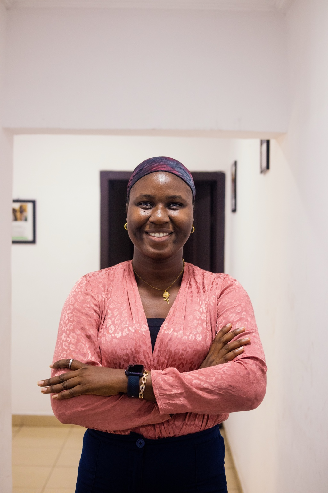

ABOUT ME
Building practical solutions from real-world problems.
My work sits at the intersection of administration, operations, reporting, data management, and technology.
I enjoy identifying repetitive or inefficient processes, understanding the problem behind them, and creating practical systems that make work easier, improve reporting, and provide better visibility for decision-making.
My experience includes administrative coordination, program operations, data collection and management, reporting, dashboards, process automation, stakeholder coordination, and the development of digital tools for nonprofit programs.

CONTINUOUS LEARNING
Certifications & Professional Development
Courses and certifications that support my work across operations, data, health, and AI.
Loading certifications…
MY PROFESSIONAL PROFILE
My Curriculum Vitae
Explore my experience in administration, operations, data management, reporting, process automation and project coordination. View or download my latest CV below.
Loading my latest CV…